Location: Jammu and Kashmir
Height: 2,650 meters (8,694 feet)
Best time to visit: October to March
Activities: Skiing, Trekking, Gondola Ride
Highlights: Known for its ski resorts and lush meadows, offering spectacular views of the Pir Panjal Range.
 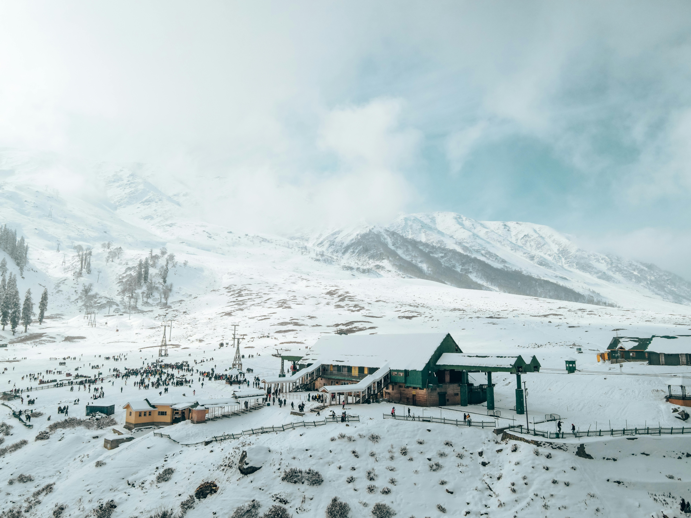
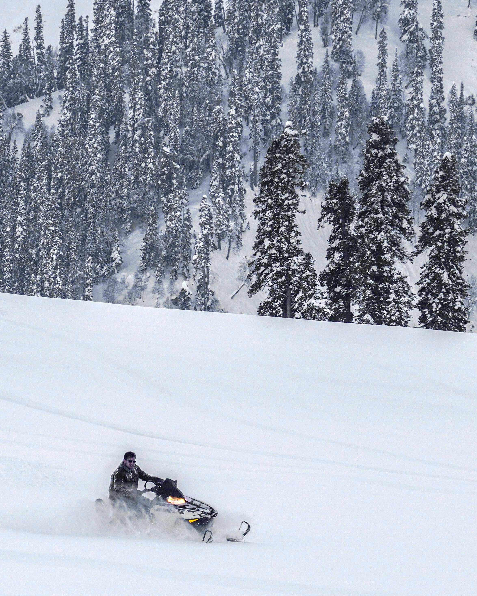
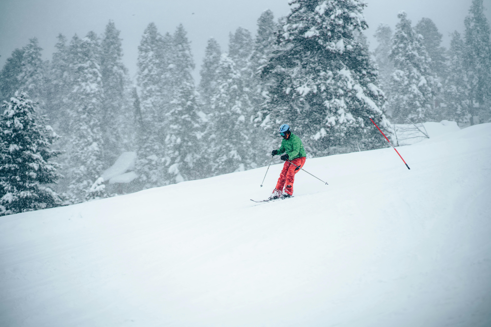
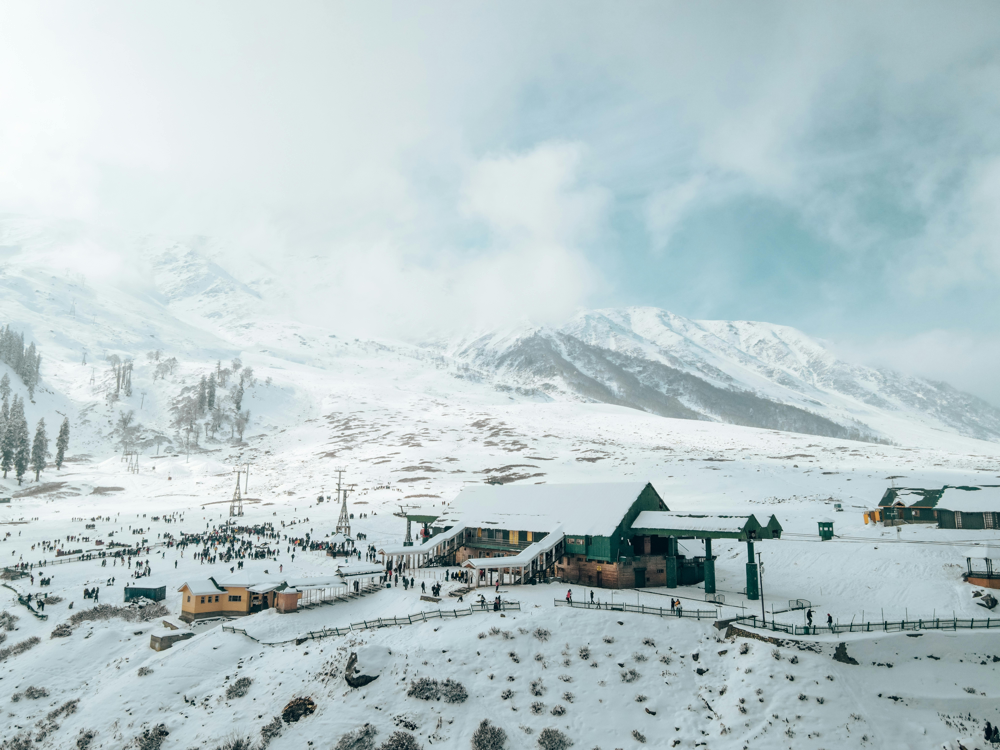
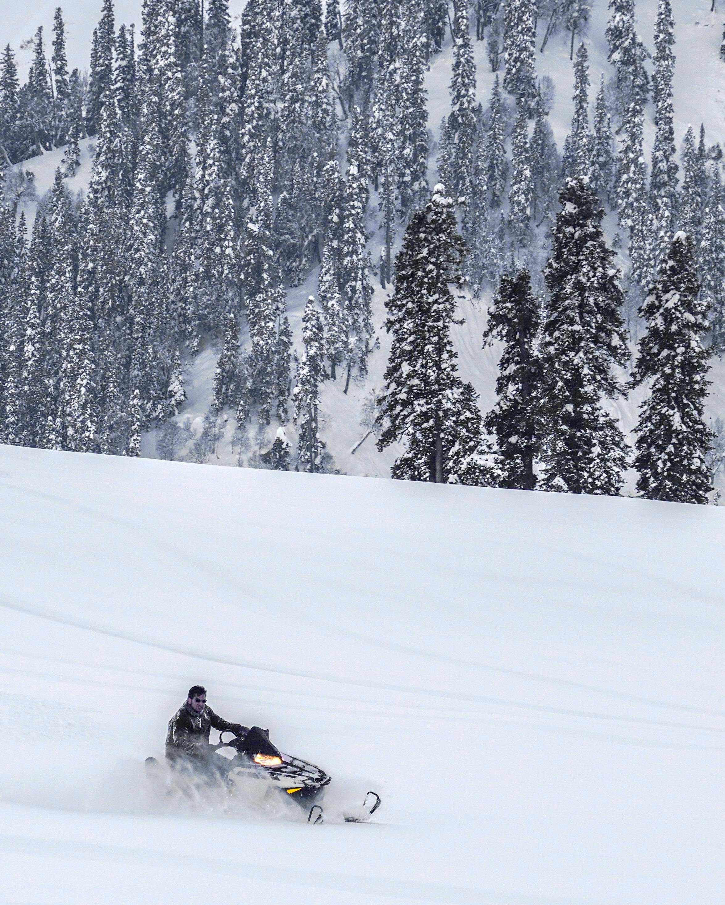
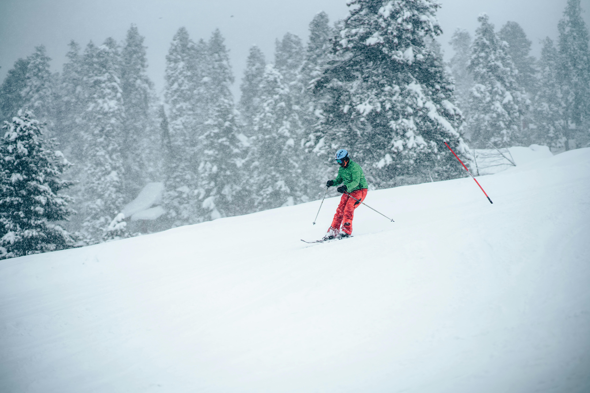
Location: Uttarakhand
Height: 4,000 meters (13,123 feet)
Best time to visit: March to June
Activities: Trekking, Camping
Highlights: A trek to the summit of Chandrashila offers breathtaking views of the Himalayas, including Nanda Devi and Trisul.
 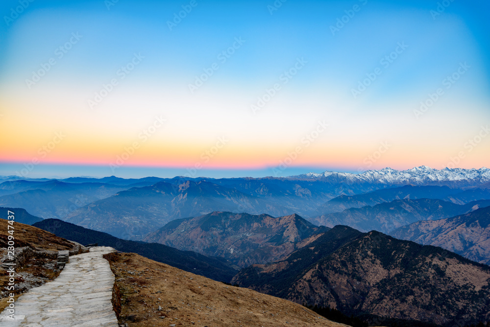
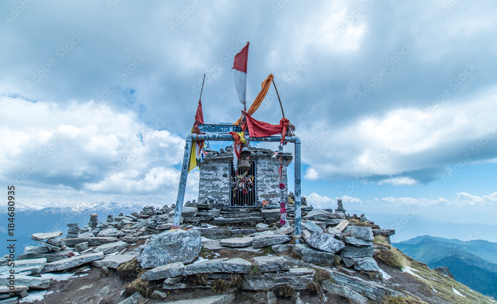
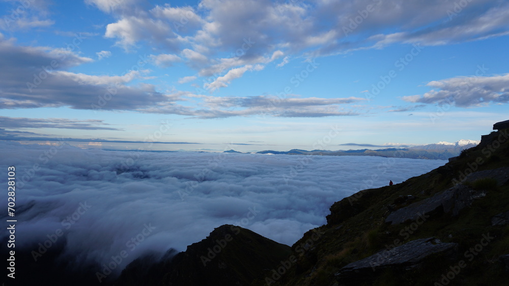
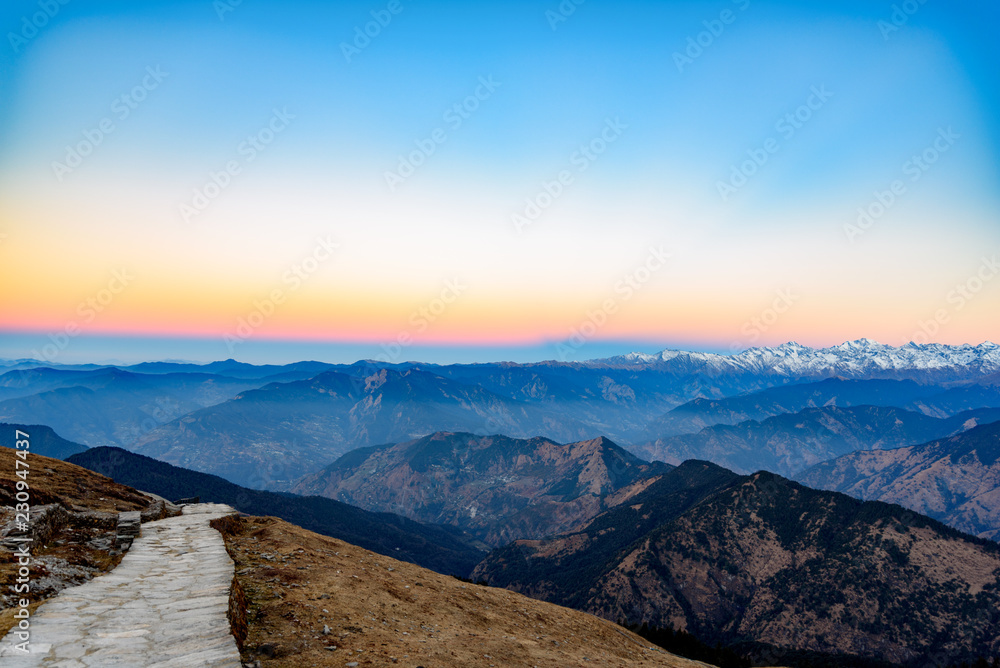
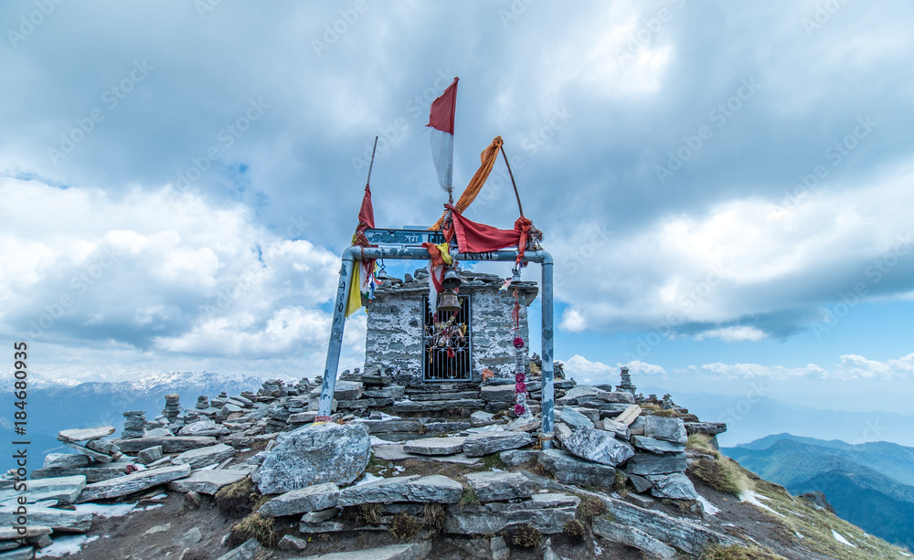
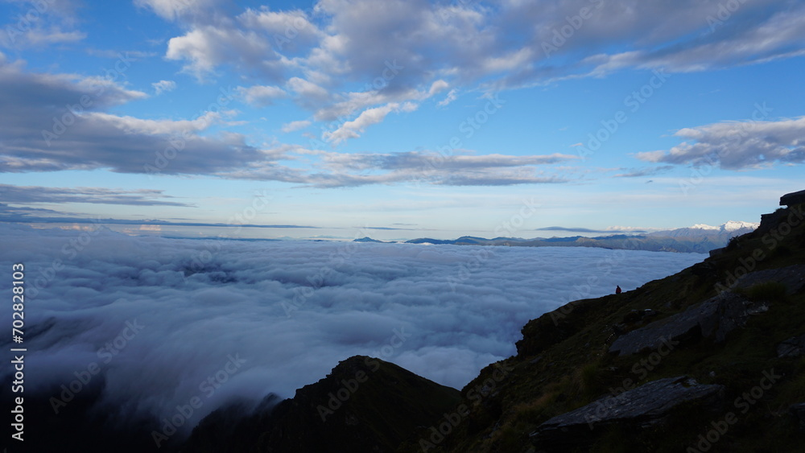
Location: Uttarakhand
Height: 7,756 meters (25,446 feet)
Best time to visit: May to September
Activities: Trekking, Mountaineering
Highlights: Third highest peak in India, offers breathtaking views and is surrounded by glaciers.
Location: Sikkim
Height: 8,586 meters (28,169 feet)
Best time to visit: April to June
Activities: Trekking, Mountaineering
Highlights: Third highest mountain in the world and highest peak in India, known for its stunning vistas and challenging treks.
Location: Uttarakhand
Height: 6,940 meters (22,769 feet)
Best time to visit: May to June or September to October
Activities: Trekking, Pilgrimage
Highlights: A popular pilgrimage site for Hindus, known for its proximity to the famous Kedarnath Temple